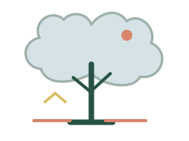

Diófa Műhely · Sajbán-Frőhner Alexandra
J’aime aider. Vraiment.
J’aime travailler avec les enfants, organiser, chercher une solution lorsqu’une personne a besoin d’un coup de main. Cela me fait plaisir de savoir que ce que je fais compte pour quelqu’un. Pourtant, certains soirs, je constate que chacun a reçu une part de ma journée, tandis que ce que je m’étais promis à moi-même est resté de côté.

Moi aussi, j’ai ma place dans cette histoire
Parfois, je dis oui avant même de me demander si j’ai réellement le temps. J’apprends à dire non, à reconnaître mes limites et à demander de l’aide lorsque j’en ai besoin. Je n’ai pas de réponse toute faite à chaque situation. J’ai plutôt des histoires, des questions et des expériences du quotidien dans lesquelles d’autres se reconnaîtront peut-être.
C’est ainsi qu’est né Egy kis tér : vingt-quatre situations familières, des questions et des pages que l’on peut ouvrir dans l’ordre que l’on veut. J’aimerais que quelques mots sincères suffisent parfois. Dans les supports destinés aux enfants, je tiens aussi à laisser une place au dialogue et à rappeler quand il faut demander l’aide d’un adulte de confiance.
Comment je crée mes publications

Je pars souvent d’un moment ordinaire : une phrase difficile à prononcer, une tâche trop grande, un enfant qui n’est pas écouté, ou ce temps pour soi qui manque encore. J’en fais des questions, des histoires, de petites étapes à planifier ou des pages à remplir. Le journal de prière de trente jours, les agendas et les cartes de discussion ont des fonctions différentes, mais le même point de départ : la vie quotidienne.
Mes observations quotidiennes et mes expériences personnelles sont le point de départ des publications. Je rassemble et organise les histoires, les questions et les activités en laissant de la place aux réponses de chacun. Je distingue les récits inspirés de mon vécu des exemples imaginés ; les propositions de dialogue ne sont pas des transcriptions de conversations réelles. J'assume les décisions éditoriales finales sans présenter ces livres comme des outils cliniques ni leur attribuer une approbation officielle religieuse ou institutionnelle.
Les cartes Helyed van köztünk sont présentées à l’aide de véritables photos du produit ; plusieurs autres couvertures sont des illustrations numériques. Les éditions originales sont en hongrois. Les descriptions du site en français, anglais et allemand ne sont pas des éditions imprimées traduites.
Contact et demandes de précommande
Tu peux m’écrire au sujet des neuf publications. Un courriel reste une demande de renseignements, ni un achat confirmé ni une réservation. Je précise le prix, la disponibilité, le paiement et la livraison avant toute confirmation. Aucun paiement en ligne n’est proposé ici.
Vie privée et transparence
Je n’enregistre ni ne reçois les réponses au questionnaire « Comment vas-tu ? ». La langue choisie peut être mémorisée sur ton appareil. Le site charge les polices DM Sans et Fraunces via Google Fonts. Je distingue clairement les photographies réelles des produits des illustrations de couvertures.
Mentions légales
- Créatrice et contact éditorial
- Sajbán-Frőhner Alexandra
- Projet éditorial
- For Every Path · Diófa Műhely
- diofamuhelykozosseg@gmail.com
Je compléterai les informations d’immatriculation et d’exploitation légalement requises lorsqu’elles auront été vérifiées. Ce site ne propose pas de paiement en ligne.